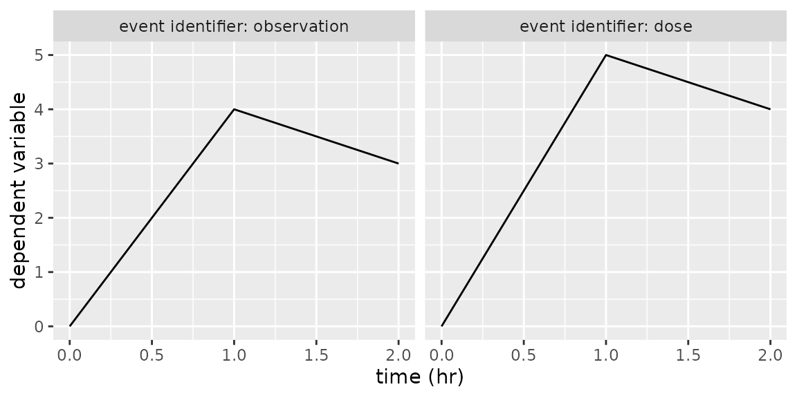
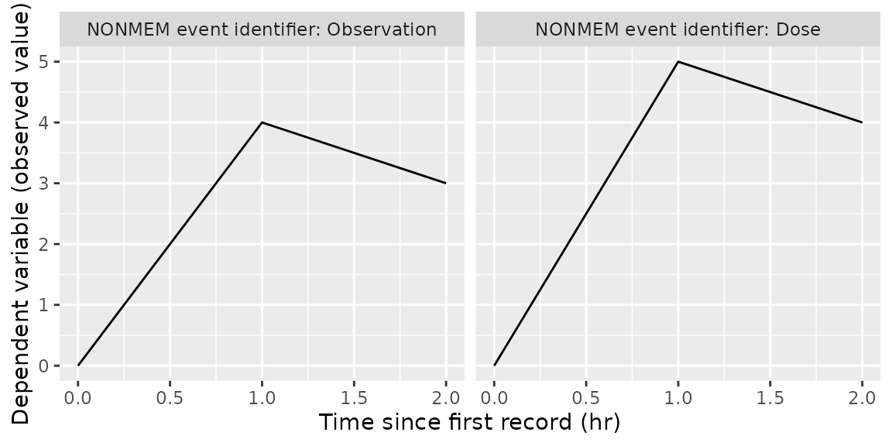

This vignette covers creating a yspec specification from a data frame, putting its variables in data order, saving it, starting from the bundled NONMEM specification, and using a specification to label plots.
Create a specification from a data frame
df_to_yspec() writes a yspec YAML file from a data frame
that describes the variables.
variables <- data.frame(
name = c("WEIGHT", "SEX", "AGE", "ID"),
label = c("Body weight", "Sex", "Age", "Subject identifier"),
unit = c("kg", NA, "years", NA),
type = c("numeric", "character", "numeric", "numeric"),
codes = c(NA, "F=Female, M=Male", NA, NA)
)
path <- tempfile(fileext = ".yaml")
df_to_yspec(
variables,
desc = "Example data set",
varname = "name",
vardesc = "label",
varunit = "unit",
vartype = "type",
varcodelist = "codes",
output = path
)
#> YAML file created: /tmp/RtmpiRk9g4/file1b22a5fe78f.yaml
spec <- yspec::ys_load(path)
names(spec)
#> [1] "WEIGHT" "SEX" "AGE" "ID"Entries in the code list may be code=label or
label=code, separated by commas or new lines. Supply
codelist_func to parse another format.
Put variables in data order
ys_sort_spec_vars() orders the specification to match
the columns of a data frame. Specification variables that are not in the
data follow, in their original order, and data columns that are not in
the specification are ignored.
data <- data.frame(ID = 1, AGE = 35, SEX = "F", WEIGHT = 65)
sorted <- ys_sort_spec_vars(data, spec)
names(sorted)
#> [1] "ID" "AGE" "SEX" "WEIGHT"Save a specification
ys_write() writes a loaded or sorted specification back
to YAML. The output is a standalone specification: lookup results are
written in full, derived fields are omitted, and comments and formatting
are not kept.
Start from the NONMEM specification
ysx_load_pkpdspec() loads a specification of standard
NONMEM columns such as ID, TIME,
DV, CMT, EVID and
AMT. Its missing_code is -999,
DV allows missing values, and ID is the group
column.
pkpd <- ysx_load_pkpdspec()
head(names(pkpd), 10)
#> [1] "C" "NUM" "ID" "TIME" "TAFD" "TAD" "SEQ" "OCC" "CMT" "EVID"
pkpd$EVID$decode
#> [1] "observation" "dose" "other" "reset"
#> [5] "reset and dose"Label plots from a specification
ysx_plt_relab() relabels axis and legend titles and
facet_wrap() or facet_grid() strips from a
specification, with units on axis titles. Coded facet values are
decoded.
library(ggplot2)
dose <- data.frame(
TIME = c(0, 1, 2, 0, 1, 2),
DV = c(0, 4, 3, 0, 5, 4),
EVID = c(0, 0, 0, 1, 1, 1)
)
p <- ggplot(dose, aes(TIME, DV)) +
geom_line() +
facet_wrap(~EVID)
ysx_plt_relab(p, pkpd)
Use label_type = "long" or "short" to
choose the specification field. An error is raised if that field is
missing for a plotted variable. Use labs for custom labels,
facet_labels for individual facet levels, and
var_map when the data name differs from the specification
name.
renamed <- setNames(dose, c("time", "conc", "evid"))
p2 <- ggplot(renamed, aes(time, conc)) +
geom_line() +
facet_wrap(~evid)
ysx_plt_relab(
p2,
pkpd,
var_map = c(time = "TIME", conc = "DV", evid = "EVID"),
label_type = "long",
facet_labels = list(evid = c(`0` = "Observation", `1` = "Dose"))
)